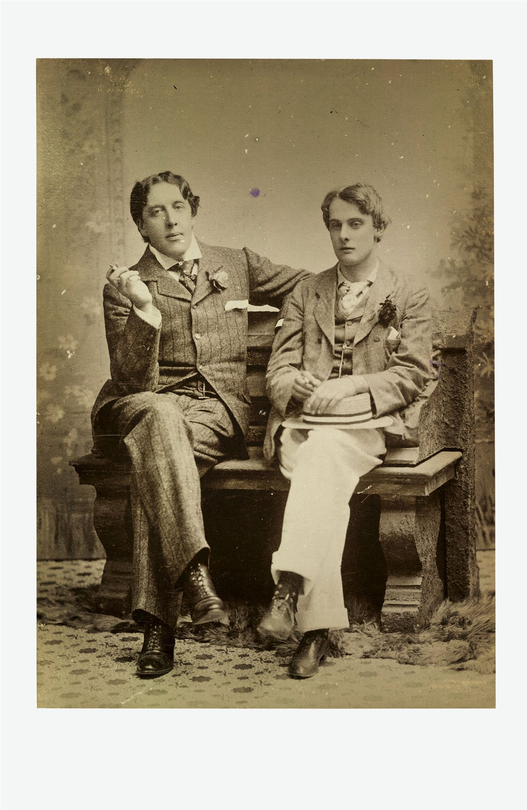
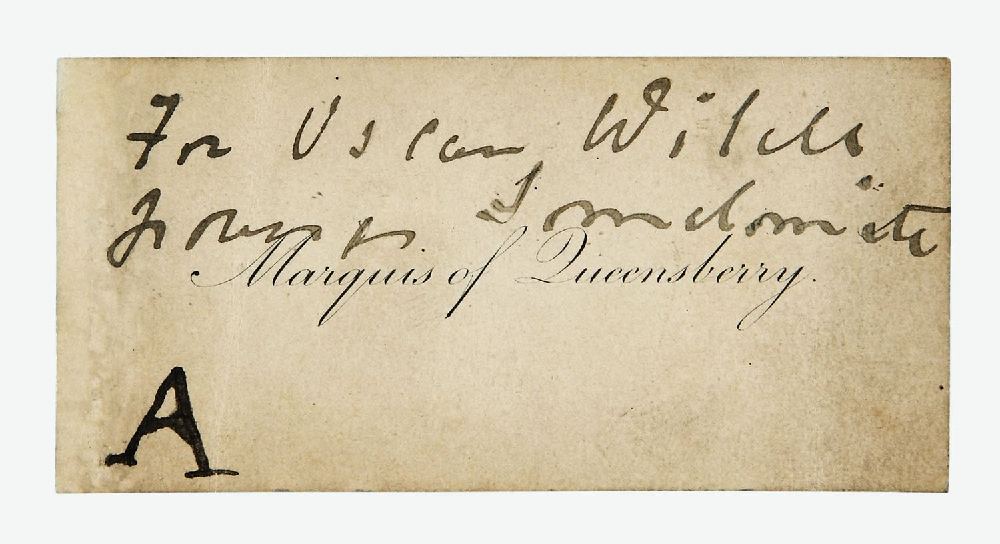
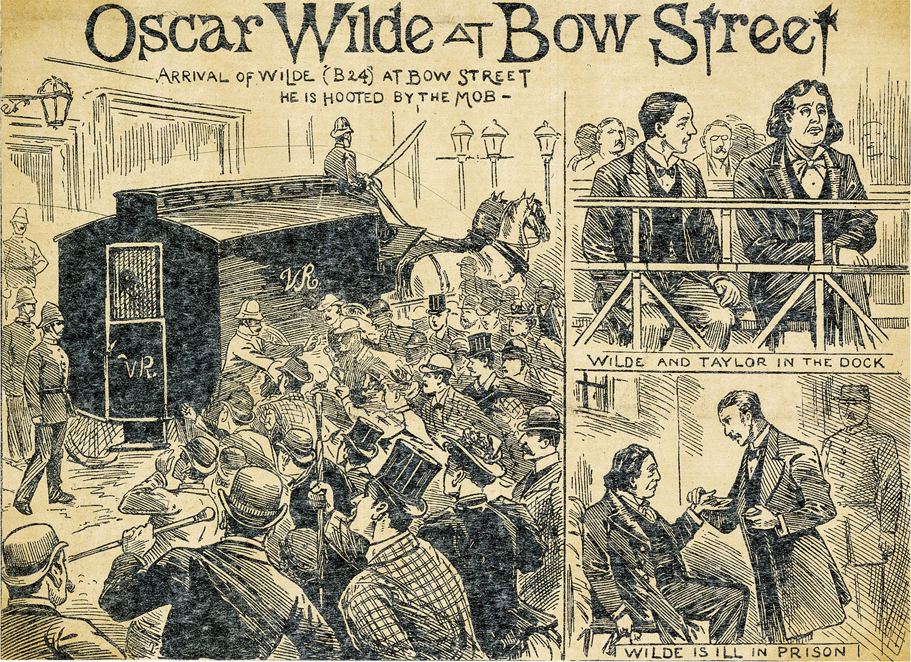

El Juicio
En 1895, cuando el marqués de Queenberry (padre de Alfred Douglas, amante de Wilde) inició una campaña de difamación en periódicos y revistas acusándolo de homosexual. Oscar Wilde junto con Alfred Douglas:
"Para Oscar Wilde, que alardea de somdomita". El marqués dejó esta nota, con falta de ortografía incluida, en un club que frecuentaba el escritor.
Wilde no se lo pensó dos veces y denunció a Queensberry por difamación, aunque las revelaciones que se harían en el juicio pusieron de manifiesto su homosexualidad y se giraron en su contra más adelante.
Oscar Wilde era un personaje muy famoso y su juicio centró la atención de toda la sociedad británica de la época. Durante semanas fue el tema principal que hablaba el país. En la siguiente imagen podemos ver varias ilustraciones de un periódico londinense sobre el juicio.
El 27 de mayo de 1895, Oscar Wilde fue condenado a dos años de prisión y trabajos forzados.
Las numerosas presiones y peticiones de clemencia efectuadas desde sectores progresistas y desde varios
de los más importantes círculos literarios europeos no fueron escuchadas, y el escritor se vio obligado a
cumplir por entero la pena.
Sus libros se retiraron de las librerías, su nombre aparecía tachado en los carteles de las obras teatrales que se estaban representando, sus deudas se agravaron y su casa quedó saqueada.
Enviado a Wandsworth y Reading, donde redactó la posteriormente aclamada Balada de la cárcel de Reading,
la sentencia supuso la pérdida de todo aquello que había conseguido durante sus años de gloria. Carcel de Reading:
En el año 2022 fueron publicado “Los procesos de Oscar Wilde” obra publicada por Lumen, en la que se accede por primera vez al juicio que significó un cambio fundamental en la vida del autor. Tapa del libro: